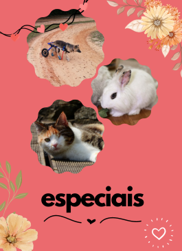

Para pets que necessitam de algum cuidado especial devido a algum problema de saúde ou à falta de algum membro, nesta opção será chamado um especialista para cuidar do seu pet durante a estadia (podendo ser adicionadas preferências e peculiaridades do pet na hora da hospedagem).